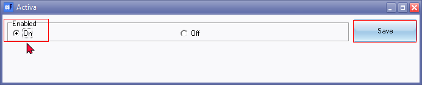
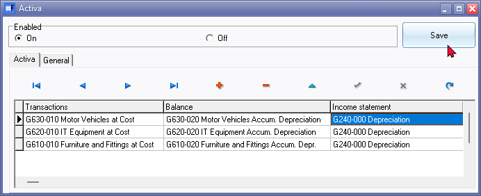
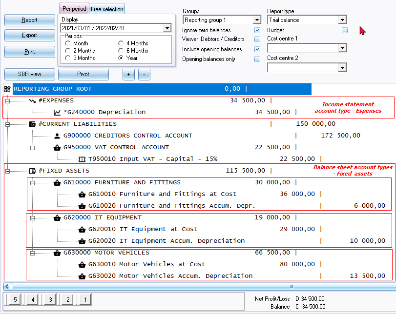
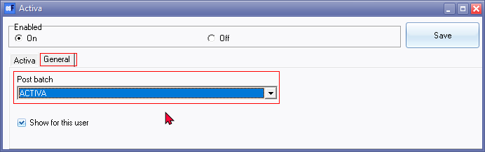

Activate the Activa plugin and setup
Activa setup
Before you start with the Activa Setup, it is recommended that you:
- Create (add) a batch type for the Activa transactions (e.g. Activa journal).
- Check your Assets for any combined transactions (e.g. opening balances) and split them to the correct asset items. You may have purchased for example 2 or more motor vehicles but have entered them as a combined balance. You may need to correct this as separate entries (e.g. using the General journal or Activa journal). Obtain the following details (in the Asset register) for each of these assets:
- Description
- Purchase date
- Purchase amount
- Write-off type (Percentage or amount per period)
- Write-off period (per month, quarter, 6 months or per annum)
- Rest amount (Salvage value, scrap value or trade-in value, etc.).
- Current Amount - the book value of the asset as per last write-off)
- Any extra information (you may add these extra text).
- Life span of the asset and method of depreciation.
Activate the Activa plugin
This Plugin will need to be activated for each Set of Books, if you need to use this plugin in other Sets of Books.
To activate the Activa plugin:
- On the Setup ribbon, select Plugins → Financial tools → Activa. If this plugin is not listed under Plugins → Financial tools, activate it via Tools → Activate plugins.

- Click on the On radio button and click on the Save button. The Activa screen will be closed.
- Relaunch the Activa plugin (from the Plugins → Financial tools → Activa menu (see step 1). The Activa tab and the General tab will be displayed.

|
|
You may use the record buttons to save and manage records. |

|
|
You may click on any of the column headings (i.e. Transactions, Balance or Income statement) and drag it to the left or right to change the sequence in which to display the columns. |

- You need to select the following 3 accounts for each of your assets:
- Transactions - Select the Asset account (the account on which all assets are purchased). This should be reported in the Balance sheet.
- Balance - Select the Asset's Accumulated depreciation account (the contra account on which the asset's depreciation are recorded). This should be reported in the Balance sheet.
- Income statement - Select the account for the expenses to write-off (e.g. Depreciation account). This should be reported in the Income statement.
|
|
If you have created new accounts for your assets in the Setup ribbon, select Setup → Accounts menu, you need to launch the Activa setup screen and add the new asset accounts. Fixed assets is usually recorded as follows in the Trial balance as follows:  Depreciation expense account (Income statement) The total expense of depreciation transactions written-off in the selected financial period. Fixed assets accounts (Balance sheet) The Main account of the asset displays the net value of the asset. This is the cost price minus the accumulated depreciation of the asset during the life span of the asset. Thus is the NETT VALUE of the asset class. The Asset at cost price displays the purchase price and may include any additional cost incurred to make the asset useful for its purpose (e.g. installation costs). The Asset accumulated depreciation account displays the total amount written-off over the lifespan of the asset as at the specific date. This is the total of the depreciation transactions over the lifespan of the asset (which includes previous financial years. |
- Click on the General tab.

- Select a batch (journal) (e.g. General journal, Activa journal) for your depreciation transactions.
|
|
If you did not select a batch and you are trying to add an Activa assets or manually add an Asset an error message will be displayed. "No batch selected please select batch in setup!" You then need to click on the OK button and select a batch to process activa transactions. |

|
|
If you wish to use a specific batch type (not available on this list), e.g. Depreciation journal (or any other batch type) you may add it in the Setup → Batch types (Setup ribbon). To do this you need to click on the Save button and add the batch type. Should there be any transactions in the batch type (selected from this list), e.g. General journal, an error message will be displayed. "Batch is not empty!" You then need to click on the OK button and process the transactions in the selected batch. To avoid this, it is recommended that you create (add) a separate batch for the Activa plugin transactions. |
- Select the Show for this user option. The Activa plugin may be deactivated for other users in a multi-user environment.
- Click on the Save button.
- Reopen the Set of Books to add the Activa icon on the Default ribbon.